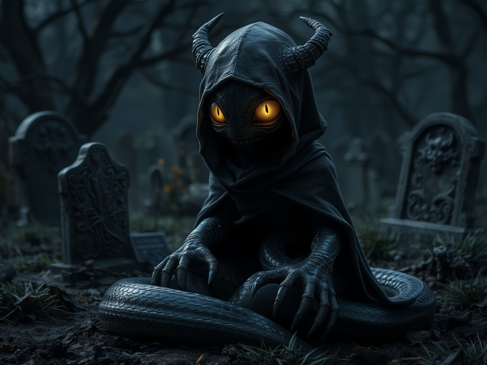

Born from the stagnant grief of the fallen, these living guardians serve as the ecological vultures that bridge the gap between life and death. Though feared as grisly omens, they are a vital biological response that cleanses necromantic rot to prevent the deceased from poisoning the living world.